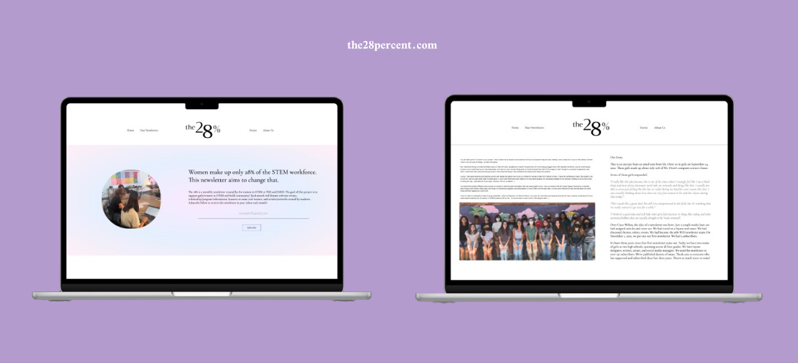

Background
In junior year of high school the coding class I took was AP Computer Science Principles. In this class we mainly focused on the use of the coding language Python. For the AP test we had to take a multiple choice test as well as make a project within a time limit. The project could be any type of computer program so I decided on a game.

Brainstorming
When I think about games that I play, most of my favorite ones include some kind of turn based combat. For example, games like Pokemon, Persona, and Fire Emblem are some of my favorites. A basic turned based game is simple enough to where I can finish it in time to write about it for the test. I also enjoy story games so adding any type of story would make it more intersting. Now as for the setting, I am big on fantasy so why not start there?
Requirements & Needs
We were given 9 hours of classtime to create the project and answer questions about it. Needed to use specific code like functions and loops. Then the questions that were asked were like "What is the point of the code?" as well as having to explain a part of the code.
Collaboration
Although we weren't able to ask our teacher for help, we could always ask our peers questions. This project showed me how important collaboration is. Throughout the creation process, people helped me find bugs in my code while others helped me brainstorm a solution to these bugs. In the end, I was able to finish everything on time thanks to my peers.
The Work Process
With the initial idea in mind, having another point of reference would be a good way to organize my thoughts. Using a mood board (albeit very basic), I was able to come up with the basic story as well as what would be happening in the game.

A lot of the team liked the simplicity of the navigation menu and
information architecure, noting it was really easy to find
everything and navigate through the website.
Team members also liked the use of a grid layout for past
newsletters and how simple the subscribe feature was.
But in terms of the color & typography choices, the team was
divided.

The designer explained she was trying to resemble the colors and style of a vintage newspaper. But other members argued that the colors should be more aligned with the newsletter brand colors - purples, blues, and greens. In a survey that our head of outreach posted on Instagram, the majority agreed to make the switch to a cooler color palette.

Final Design
For the final design, we kept some of the features from the initial
design - such as the navigation bar, most of the navigation labels, and
the simple subscription form. We also kept the grid layout to display
past newsletters.
We did change the color scheme to a combination of purples and blues,
which better matched our other brand and social media materials. We
added an additional page for events and moved the subscription form to
the home page.
The website was built in HTML, CSS, and JavaScript. The form posts the
submitted emails to a google sheets, using a custom API built using the
platform SheetDb. The website is deployed through Vercel.
Take a look at the github repository here.

What's next?.
After submitting a proposal and website, we were awarded the GirlsBuild
Year 9 grant! We will be using the funds to cover t-shirt costs,
graduation accessories, and monthly printing costs.
This website is updated monthly by myself, to post the new newsletter
and any event updates.